紙面の本文の幅を画面に合わせているため。大きくすると、行が画面からはみ出し、横にずらしながら書くことになります。
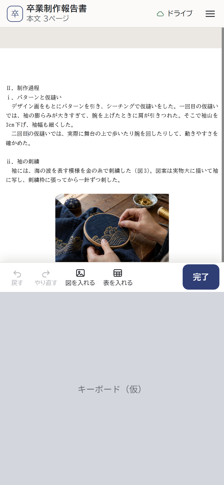
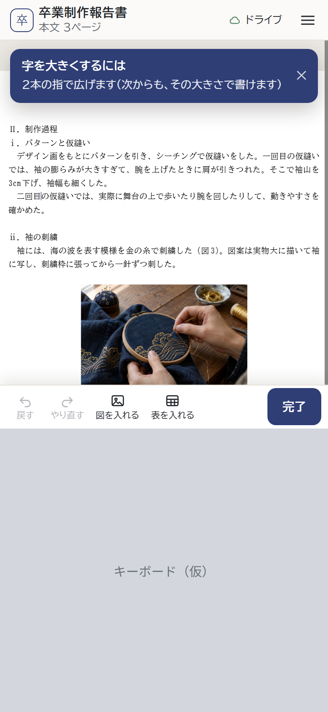
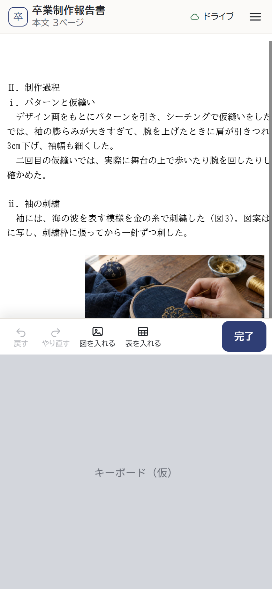
目次の行は高さ 11px ほど。押すと、その見出しを書き始めてキーボードが出ます（見出しへ移りたいだけのことが多い）。
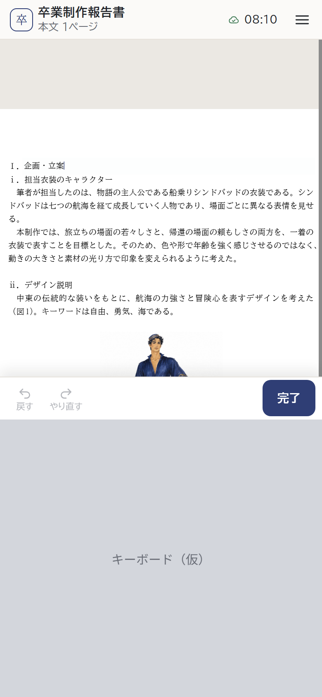
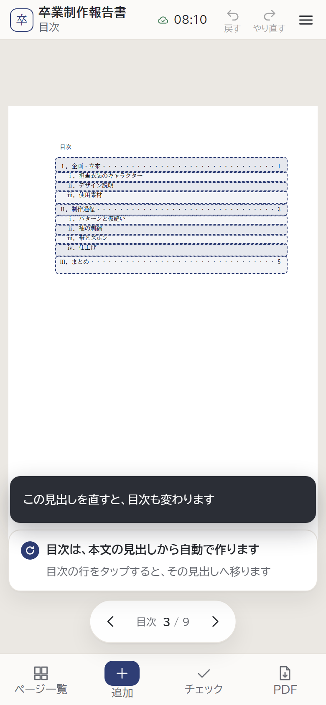
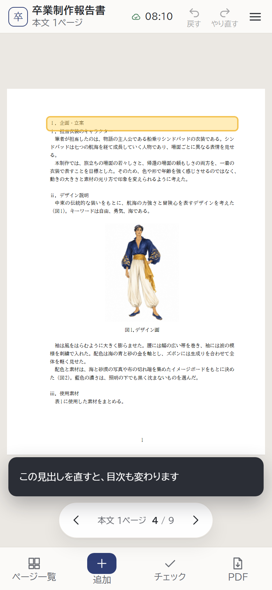
キーボードの上の道具が3段（152px）になり、紙面が 200px ほどしか見えません。
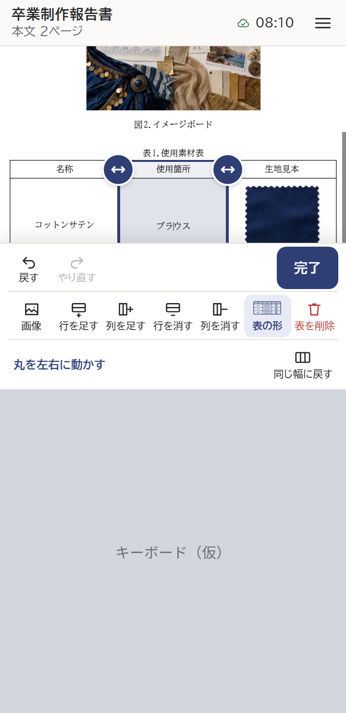
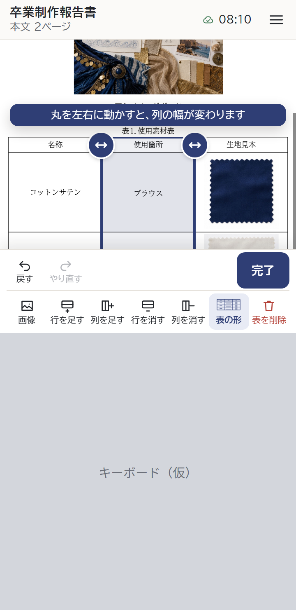
「08:10」だけだと、いまの時刻と間違えやすい。日付が付くときは「10/20 23:47」。
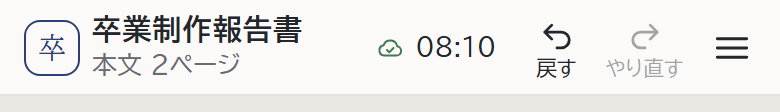
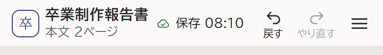
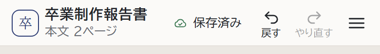
空の段落・見出しは Backspace で消せるようにしました。字の入った段落ごと消すボタンを足すかどうか。
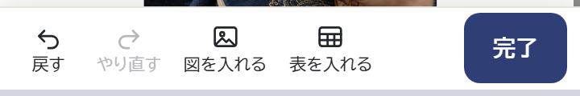
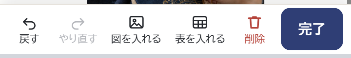